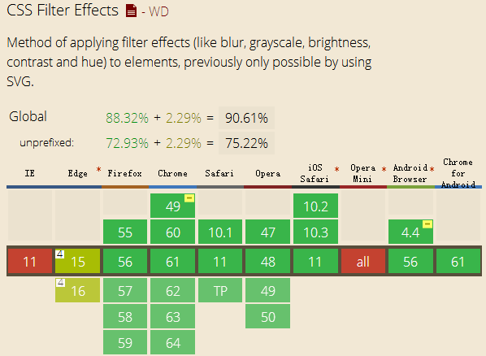

Sometimes, we want to use front end skills to improve user experience, just like iPhone, you know, when Steven Jobs designed iPhone, he took all the details into account, especially the front end user experience. Blurred picture or background is one of them. It makes you feel all the control operations are real. Just like below, click or touch the block, you will see the effect. (If you cannot see the effect, just update your brower, it's too old.)
Hover/Touch me
You can see this effect
It's pretty cool! You must want to learn it! Tell me yes! Yes! Ok, just do it!
1. "blur"
This is an attribute of CSS3 filter. Though only IE13+ support it, its compatibility is great in mobile browsers. It means if your phone is created after 2013, your mobile browser will support "blur" attribute.

For the IE users in PC end, there has two solutions:
(1) Use SVG "feGaussianBlur" label, it will be supported by IE10+, but you should put your "div" or picture in the "svg" label.
(2) IE9- will have their own method:
"filter: progid:DXImageTransform.Microsoft.Blur(PixelRadius=10, MakeShadow=false);".
Actually, in the PC end, we do better not use this effect, it's an unnecessary move for the large screen browser of PC end. So just doing the media query is fine.
2. Structure
For this example, we will use three div like below:
<div id="blur-container">
<div id="blur-background"></div>
<div id="blur-showdiv"></div>
</div>
And their CSS code:
#blur-container {
margin-left: 2em;
width:200px;
height:200px;
border: 1px solid #ccc;
overflow: hidden; // required! Otherwise the blur-showdiv will show
}
#blur-background {
width:200px;
height:200px;
background: #336699;
}
#blur-showdiv {
width:200px;
height:150px;
background: #333;
opacity: 0.5;
-webkit-transition: -webkit-transform 0.4s;
-moz-transition: -moz-transform 0.4s;
transition: transform 0.4s;
// required! Control the animation
}
Before the next step, there are two keys that I want to remind you:
(1) If you want to achieve blur effect, what should you do? Easy!
#blur-background:hover {
-webkit-filter: blur(10px); /* Chrome, Opera */
-moz-filter: blur(10px);
-ms-filter: blur(10px);
filter: blur(10px);
}
(2) If you want to achieve the effect, what will you do? Hover the first block, and the second one does the animation.
Yes! Use the CSS selectors. The code like below:
#blur-background:hover+#blur-showdiv{
// do something
}
It's fine, but not in this example. For this example, because your mouse hover the first div, the second one will go up, so in this moment, your mouse will hover the second one, not the first one! It means the effect will disappear or doesn't work like what we want. So we must put the "hover" command to the parent element: "#blur-container". The final code likes below:
#blur-container:hover #blur-showdiv{
-webkit-transform: translateY(-150px);
-moz-transform: translateY(-150px);
-ms-transform: translateY(-150px);
transform: translateY(-150px);
}
#blur-container:hover #blur-background{
-webkit-filter: blur(10px); /* Chrome, Opera */
-moz-filter: blur(10px);
-ms-filter: blur(10px);
filter: blur(10px);
}
Ok, if you don't know how "transition" or "transform" works, just learn it. The purpose of this blog is just to show how to do the effect.
The final thing I would like to mention is that CSS selectors can only choose the next sibling and children nodes, the parent node and the previous sibling cannot be selected by CSS, for this reason we have to do the "hover" operation in the parent node!
Ok, have a nice day!
(That's all)